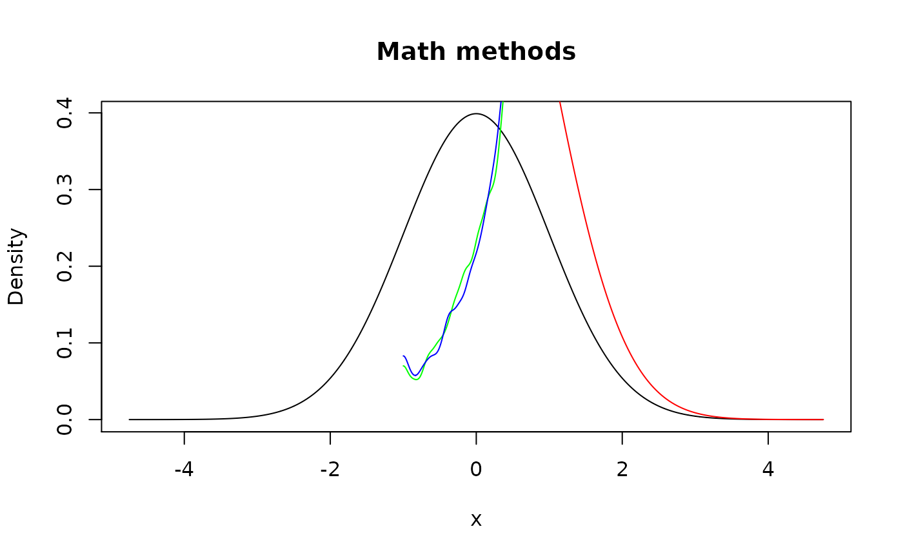

There are custom methods implemented for three out of four S3 group generic functions: Math, Ops, Summary. Note that many
of them have random nature with an idea of generating samples from input
pdqr-functions, performing certain operation on them (results in one
generated sample from desired random variable), and creating new
pdqr-function with appropriate new_*() function. This is done
with form_trans(), so all rules for determining class and
type of output is taken from it.
# S3 method for pdqr
Math(x, ...)
# S3 method for pdqr
Ops(e1, e2)
# S3 method for pdqr
Summary(..., na.rm = FALSE)Arguments
| x, e1, e2 | Objects. |
|---|---|
| ... | Further arguments passed to methods. |
| na.rm | Logical: should missing values be removed? |
Value
All methods return pdqr-function which represents the result of
applying certain function to random variable(s) described with input
pdqr-function(s). Note that independence of input random variables is
assumed, i.e. f + f is not the same as 2*f (see Examples).
Details
Customization of method behavior may be done using mechanism of options(). These are the possible options:
pdqr.group_gen.args_new. This will be used asargs_newargument forform_trans()in methods with random nature. Default islist().pdqr.group_gen.n_sample. This will be used asn_sampleargument forform_trans()in methods with random nature. Default is 10000.pdqr.group_gen.repair_supp_method. All methods that have random nature take care of output support by trying to "repair" it, because default use ofnew_*()functions returns a slightly bigger support than range of input sample (see Examples). Repairing is done withform_resupport()where target support is computed separately andmethodargument is controlled by this option (preferred ones are"reflect", default, and"trim"). In most cases output support is computed directly based on special features of generic function. But for some difficult cases, likegamma(),digamma(),lgamma(),psigamma(),^, and%%it is a result of simulation (i.e. slightly random, which slightly increases random nature of those methods).
Math
This family of S3 generics represents mathematical functions. Most of the
methods have random nature, except abs() and sign() which are
computed directly. Output of sign() has "discrete" type with 3 "x" values:
-1, 0, 1.
Note that cumsum(), cumprod(), cummmax(), and cummin() functions
don't make much sense in these implementations: their outputs represent
random variable, sample of which is computed by applying cum*() function to
a sample, generated from input pdqr-function.
Ops
This family of S3 generics represents common operators. For all functions
(except & and |) input can be a pdqr-function or single number.
A list of methods with non-random nature:
!,+,-in case of single input, i.e.!for-f.Functions representing linear transformation, i.e. adding, subtracting, multiplying, and dividing by a single number. For example, all
f + 1,2 - f(which is actually(-f) + 2),3*fandf/2are linear transformations, but1 / f,f + gare not.Functions for comparing:
==,!=,<,<=,>=,>. Their output is boolean pdqr-function: "discrete" type function with elements being exactly 0 and 1. Probability of 0 represents probability of operator output being false, and 1 - being true. Probability of being true is computed directly as limit of empirical estimation from simulations (as size of samples grows to infinity). In other words, output is an exact number which might be approximated by simulating two big samples of same size from inpute1ande2(one of which can be a single number), and estimating probability as share of those pairs from samples for which comparison is true. Note that if at least one input has "continuous" type, then:==will always have probability 0 of being true because probability of generating a certain exact one or two numbers from continuous random variable is zero.!=will always have probability 1 of being true for the same reason as above.Pairs
>=and>,<=and<will return the same input because probability of being equal is always zero.
Logical functions
&and|. Their input can be only pdqr-functions (because single number input doesn't make much sense). They are most useful for applying to boolean pdqr-functions (see description of functions for comparing), and warning is thrown in case any input is not a boolean pdqr-function.&'s probability of being true is a product of those probabilities from inpute1ande2.|'s probability of being false is a product of those probabilities from inpute1ande2. Note that probability of being false is a probability of being equal to 0; of being true - complementary to that.
All other methods are random. For example, f + f, f^g are random.
Summary
Methods for all() and any() have non-random nature. Their input can
be only pdqr-functions, and if any of them is not boolean, a warning is
thrown (because otherwise output doesn't make much sense). They return a
boolean pdqr-function with the following probability of being true:
In
all()- probability of all input function being true, i.e. product of probabilities of being true (implemented as complementary to probability of being equal to 0).In
any()- probability of any input function being true, i.e. complementary probability to product of all functions being false (implemented as probability of being equal to 0).
Methods for sum(), prod(), min(), max() have random nature. They
are implemented to use vectorized version of certain generic, because
transformation function for form_trans() should be vectorized: for input
samples which all have size n it should also return sample of size n (where
each element is a transformation output for corresponding elements from input
samples). This way min(f, g) can be read as "random variable
representing minimum of f and g", etc.
Notes:
range()function doesn't make sense here because it returns 2 numbers per input and therefore can't be made vectorized. Error is thrown if it is applied to pdqr-function.Although all
sum(),prod(),min(),max()accept pdqr-functions or single numbers, using numbers and "continuous" functions simultaneously is not a great idea. This is because output will be automatically smoothed (asform_trans()will use somenew_*()function) which will give a misleading picture. For a more realistic output:Instead of
min(f, num)useform_resupport(f, c(num, NA), method = "winsor")(seeform_resupport()).Instead of
max(f, num)useform_resupport(f, c(NA, num), method = "winsor").Instead of
sum(f, num)usef + num.Instead of
prod(f, num)usef * num.
See also
summ_prob_true() and summ_prob_false() for extracting
probability from boolean pdqr-functions.
Other pdqr methods for generic functions: methods-plot,
methods-print
Examples
d_norm <- as_d(dnorm)
d_unif <- as_d(dunif)
d_dis <- new_d(data.frame(x = 1:4, prob = 1:4 / 10), "discrete")
set.seed(101)
# Math
plot(d_norm, main = "Math methods")
# Although here distribution shouldn't change, it changes slightly due to
# random implementation
meta_x_tbl(d_dis)#> x prob cumprob
#> 1 1 0.1 0.1
#> 2 2 0.2 0.3
#> 3 3 0.3 0.6
#> 4 4 0.4 1.0#> x prob cumprob
#> 1 1 0.0996 0.0996
#> 2 2 0.2051 0.3047
#> 3 3 0.2934 0.5981
#> 4 4 0.4019 1.0000
# Ops
# Single input, linear transformations, and logical are not random
d_dis > 1#> Probability mass function of discrete type
#> Support: [0, 1] (2 elements, probability of 1: 0.9)!(d_dis > 1)#> Probability mass function of discrete type
#> Support: [0, 1] (2 elements, probability of 1: 0.1)d_norm >= (2*d_norm+1)#> Probability mass function of discrete type
#> Support: [0, 1] (2 elements, probability of 1: ~0.32736) #> Probability mass function of discrete type
#> Support: [0, 1] (2 elements, probability of 1: 0.81)
# Using single numbers is allowed, but gives misleading output in case of
# "continuous" functions. Use other functions instead (see documentation).
plot(min(d_unif, 0.5))op <- options(
pdqr.group_gen.n_sample = 100,
pdqr.group_gen.args_new = list(adjust = 0.5)
)
lines(d_unif + d_unif, col = "red") # `f + f` is different from `2*f` due to independency assumption. Also the
# latter implemented non-randomly.
lines(2 * d_unif, col = "blue")
# Methods for generics attempt to repair support, so they are more reasonable
# to use than direct use of `form_trans()`
d_unif + d_unif#> Density function of continuous type
#> Support: [0, 2] (515 intervals)#> Density function of continuous type
#> Support: ~[-0.1643, 2.16721] (511 intervals)
#> Probability mass function of discrete type
#> Support: [0, 1] (2 elements, probability of 1: 0.81)
# Using single numbers is allowed, but gives misleading output in case of
# "continuous" functions. Use other functions instead (see documentation).
plot(min(d_unif, 0.5))op <- options(
pdqr.group_gen.n_sample = 100,
pdqr.group_gen.args_new = list(adjust = 0.5)
)
lines(d_unif + d_unif, col = "red") # `f + f` is different from `2*f` due to independency assumption. Also the
# latter implemented non-randomly.
lines(2 * d_unif, col = "blue")
# Methods for generics attempt to repair support, so they are more reasonable
# to use than direct use of `form_trans()`
d_unif + d_unif#> Density function of continuous type
#> Support: [0, 2] (515 intervals)#> Density function of continuous type
#> Support: ~[-0.1643, 2.16721] (511 intervals)